▲ V2L이 10월 인도분부터 들어가는 모델 Y(신형 전면부 차량, 미국 촬영, 국내 사양 확정 아님) ⓒ OWS Photography / Wikimedia Commons, CC BY 4.0
"2026년 10월부터 인도되는 Model 3 & Model Y에 V2L 기능이 탑재됩니다." 테슬라코리아가 공식 계정으로 이렇게 알렸다. 반가운 소식이지만 보도를 맞춰 보면 무엇이 확정이고 무엇이 비어 있는지가 갈린다. 이 글은 V2L 활용법이 아니라 테슬라 국내 탑재의 사실관계, 현대·기아와의 차이, 한국 소비자가 확인할 것만 다룬다. 가전별 사용 시간과 안전수칙은 V2L 정전·캠핑 활용 가이드에 정리했다.
1. 테슬라코리아가 실제로 밝힌 것 — 공지 내용 정리
테슬라코리아는 X(옛 트위터) 공식 계정에 두 건의 공지를 올렸다. 하나는 모델 3 사양 변경, 다른 하나는 모델 3·Y의 V2L 탑재다. 두 게시물 원문은 열람 제한(결제 요구 응답)으로 직접 열지 못했고, 검색 결과에 노출된 게시물 본문과 브릿지경제·지피코리아·아시아투데이 보도를 대조해 정리했다.
| 항목 | 확인된 내용 | 출처 |
|---|---|---|
| 적용 시점 | 2026년 10월부터 인도되는 차량(주문일이 아니라 인도일 기준 표현) | 테슬라코리아 X 게시물, 브릿지경제 |
| 대상 차종 | 모델 3, 모델 Y. 모델 3 공지에는 V2L 탑재가 변경 항목으로 나열됨. 트림별 선택 제한은 Zen grey 시트(Model 3 Premium Long Range RWD·Performance 한정)와 19인치 다크 노바 휠(Premium Long Range RWD 한정)에만 표기되고, V2L 자체의 트림 한정 문구는 확인하지 못함 | 테슬라코리아 X 게시물(검색 노출분 본문), Teslanorth(2026-10-01) |
| V2L 정의 | 전기차 고전압 배터리에 저장된 전력을 외부로 끌어다 쓰는 양방향 충전 기술 | 테슬라코리아 X 게시물 |
| 이전 지원 차종 | 모델 Y L, 사이버트럭만 지원(이번에 모델 3·Y로 확대) | 브릿지경제·한국경제 종합 |
| 모델 3 추가 변경 | 16인치 센터 디스플레이 해상도·픽셀 밀도 개선, 블랙 헤드라이너, V2L 기능 탑재, Zen grey 시트 컬러(Premium Long Range RWD·Performance 한정), 19인치 다크 노바 휠(Premium Long Range RWD 한정). 자세한 변경 사항은 스토어에서 확인하라는 문구가 붙음 | 테슬라코리아 X 게시물 본문(X 원문은 열람 제한이라 검색 노출분 확인), Teslanorth. 16인치·블랙 헤드라이너는 디지털투데이(2026-10-01)의 중국 모델 3 보도에서도 확인됨 |
| 공지의 단서 | "이미지 속 V2L 제품 및 차량은 해외 판매용 모델로 촬영", 국내 판매 제품과 형태·디자인이 다를 수 있음 | 테슬라코리아 X 게시물(검색 노출분 기준), Teslanorth(공지 이미지가 해외 모델이라는 취지 확인) |
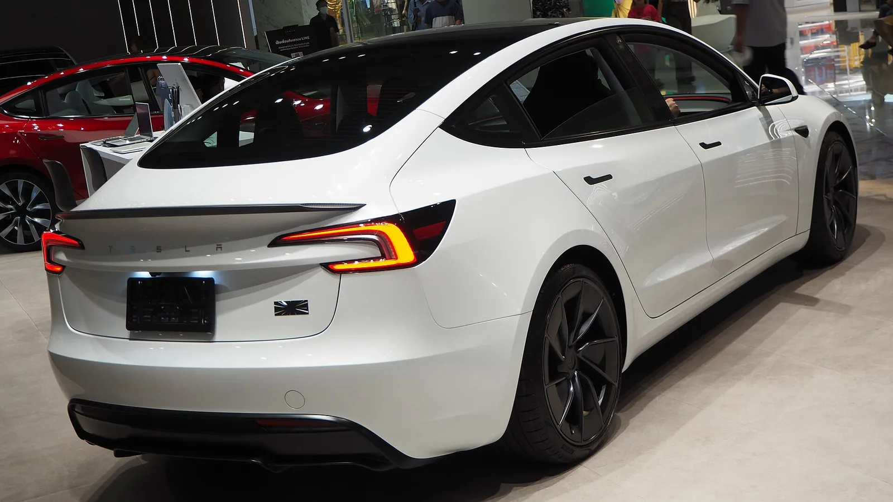
▲ 10월 인도분부터 V2L이 들어가는 모델 3(하이랜드, 전시 차량). 촬영지·트림은 확정하지 않음 ⓒ Chanokchon / Wikimedia Commons, CC BY-SA 4.0
핵심은 마지막 줄의 단서다. 공지에 쓰인 어댑터 이미지는 해외용이라 국내 제품의 외형과 정확한 사양은 판매 페이지를 봐야 알 수 있다. 같은 이유로 이 글의 출력·가격 수치는 보도에서 가져온 것이고, 테슬라 공식 쇼핑몰은 접속이 막혀(403) 직접 확인하지 못했다.
2. 어댑터는 따로 산다 — 출력 3.5kW는 어떻게 나왔나
브릿지경제는 국내에서 판매되는 '테슬라 아웃렛 어댑터'가 220V·16A·60Hz, 최대 3.5kW 출력이라고 전했다. 한국경제는 7월 초 이 어댑터가 공식 온라인 샵에 예약판매로 올라왔고 가격 14만5000원, 적용 차종은 당시 모델 Y L에 한정이라고 보도했다(기사 URL 날짜 기준). 지피코리아는 "V2L이 소프트웨어만으로 업데이트되지 않고 별도의 장치가 필요하다는 게 실망"이라는 차주 반응을 실었다.
| 시장·조건 | 전압×전류 | 계산값 | 보도된 최대 출력 | 출처 |
|---|---|---|---|---|
| 한국 | 220V×16A | 3,520W | 3.5kW | 브릿지경제, 한국경제 |
| 미국(모델 Y 프리미엄) | 120V×20A(미확인) | 2,400W(계산값) | 2.4kW, 어댑터 80달러 | 테슬라라티, 위키트리 |
| 호주(15A 플러그) | 230V×15A | 3,450W(계산값) | 보도 최대 3.5kW, 어댑터 145호주달러 | 차저랩 |
| 호주(10A 플러그) | 230V×10A(미확인) | 2,300W(계산값) | 2.3kW(미확인) | 지카(Zecar) 서술 외 확인 못함 |
| 중국 내수형 | — | — | 2.2kW(차저랩 보도) | 차저랩 |
📍 "3.5kW"를 그대로 믿으면 안 되는 이유
3.5kW는 어댑터가 낼 수 있는 상한이다. 연결한 기기의 합산 소비전력이 3,520W(220V×16A)를 넘으면 안 된다는 뜻이며, 차량 설정·배터리 잔량·외기온에 따라 더 낮게 제한될 수 있다. 이 부분은 테슬라 국내 설명서를 확인하지 못했다.
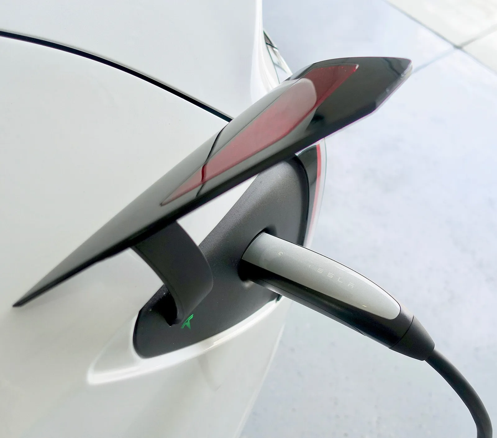
▲ 어댑터는 충전구·커넥터 쪽에 물리는 방식으로 보도됨(해외 보도 기준, 국내 방식은 확인하지 못함). 사진은 일반 충전 장면으로 V2L 어댑터가 아니며 차종·연식은 확정하지 않음 ⓒ Steve Jurvetson / Wikimedia Commons, CC BY 2.0
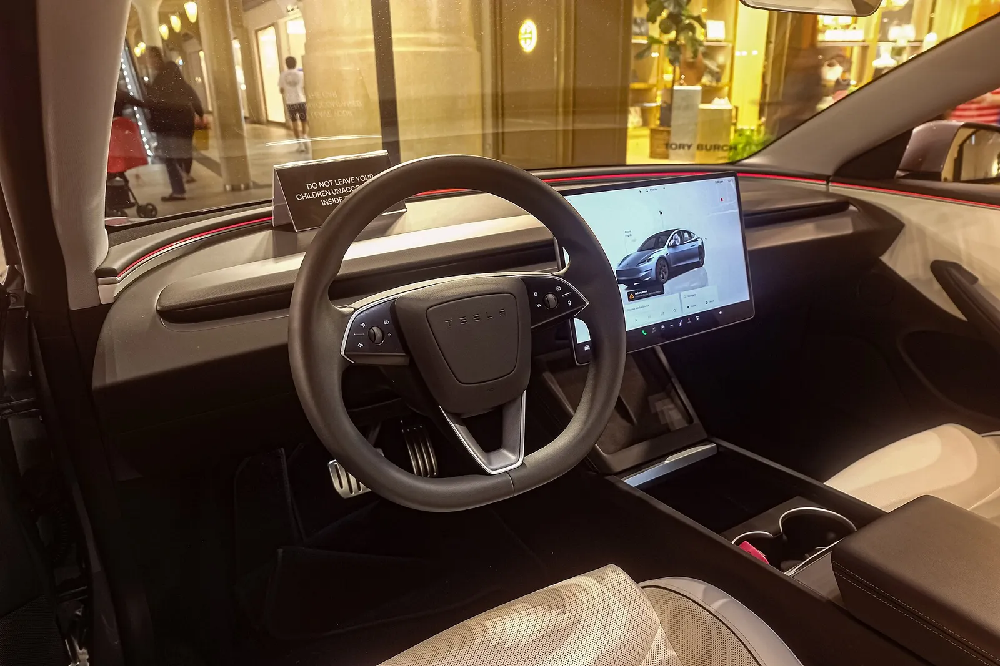
▲ 모델 3 하이랜드 실내(전시 차량). 공지된 16인치 센터 디스플레이가 이 위치에 놓인다 ⓒ Ethan Llamas / Wikimedia Commons, CC BY-SA 4.0
3. 현대·기아 V2L과 무엇이 다른가 — 가격·출력·대응 범위
한국경제는 테슬라 어댑터 가격이 현대·기아 순정 V2L 커넥터의 정가(18만 원대)와 온라인 부품몰 판매가(17만~21만 원)보다 낮다고 비교했다. 같은 보도는 "현대·기아가 훨씬 많은 차종을 지원한다"며 아이오닉 5, EV6, 제네시스 GV60을 예로 들었다. 이를 카프리즘이 같은 기준으로 계산해 보면 다음과 같다.
| 항목 | 테슬라 아웃렛 어댑터 | 현대·기아 순정 V2L 커넥터 |
|---|---|---|
| 가격 | 14만5000원(모델 Y L 예약판매 보도) | 정가 18만 원대, 온라인 부품몰 17만~21만 원(한국경제) |
| 가격 차이 | 테슬라가 17만 원 대비 약 15%, 21만 원 대비 약 31% 저렴(14.5÷17=0.853, 14.5÷21=0.690) | |
| 최대 출력 | 3.5kW(220V×16A=3,520W) | 한국경제는 3.52kVA 수준으로 보도, 현대모터그룹 자료는 아이오닉 5 외부 V2L 3.6kW(아래 공식 확인표 참고) |
| 1kW당 가격 | 약 4만1200원(145,000÷3.52) | 약 4만8300~5만9700원(170,000~210,000÷3.52). 한국경제가 적은 정가 18만 원대는 약 5만1100원 |
| 지원 범위 | 모델 3·모델 Y 신규 인도분(트림·연식 미확인), 모델 Y L, 사이버트럭 | 아이오닉 5, EV6, GV60 등 다수(한국경제) |
| 기존 차량 사용 | 대부분 불가로 전망(PCS2 필요, 5장) | 이 글에서는 차종별로 확인하지 못함 |
| 새 차 번들 여부 | 확인하지 못함 | 확인하지 못함(기본품인지 옵션인지는 트림·연식별로 다를 수 있음) |
1kW당 가격은 카프리즘이 만든 단순 지표이며, 현대·기아 출력 3.52kVA는 보도 기준이라 오차가 있다. 3.52kVA는 피상전력 단위이고 W(유효전력)와는 역률에 따라 달라질 수 있어, 비교용으로 숫자만 같게 놓고 계산했다. 가격이 싸다는 점은 사실이지만 "어댑터를 따로 사야 한다"는 구조 자체는 소비자가 체감할 비용이다. 호주 매체 지카는 "현대차는 2021년부터 아이오닉 5에서 최대 3.6kW, 어댑터 포함으로 제공해 왔다"고 썼다. 3.6kW는 이 호주 지카 서술이며 한국경제의 3.52kVA와는 별개라 한국 사양에 그대로 적용하지 않았다. 실내 콘센트형·실외 커넥터형 구분과 현대·기아 출력 한도는 V2L 활용 가이드의 1장에서 다뤘다.
공식 자료로 확인되는 것만 — 국내 V2L 차종 비교
3.52kVA(한국경제)와 3.6kW(현대차)는 숫자가 다르다. 카프리즘이 현대모터그룹 공식 자료를 열어 확인한 값은 아이오닉 5 외부 V2L 최대 공급 전력 3.6kW("3,600W 수준의 순간 출력")이다. 기아 EV6는 사용설명서에 와트 수치는 없고 16A 이하와 전열기구 금지 문구만 있다. 아래 표는 이렇게 공식 문서에서 직접 확인한 항목만 담았고, 확인하지 못한 칸은 그렇게 표시했다.
| 차종·장치 | 공식 문서에서 확인한 출력 | 실내·실외 | 공식 문서의 제한 |
|---|---|---|---|
| 현대 아이오닉 5 | 외부 V2L 최대 3.6kW(현대모터그룹 인포그래픽·기술 기사) | 실내·실외 콘센트가 있다고 설명(기술 기사). 실내 출력 수치는 확인하지 못함 | 이번에 확인하지 못함 |
| 기아 EV6 | 와트 수치 미표기, 연결 기기 16A 이하(2025년 사용설명서) | 기아 EV6 상품 페이지가 실내·실외 콘센트를 모두 안내 | 전기 주전자·토스트기·다리미 등 전열 제품 사용 금지, 방전 하한 설정 가능(설명서) |
| 테슬라 모델 3·Y(10월 인도분) | 공식 출력 확인 못함. 220V·16A·60Hz, 최대 3.5kW는 브릿지경제 보도 | 외부 어댑터 방식(보도). 실내 콘센트 여부는 확인하지 못함 | 테슬라 국내 설명서 확인하지 못함 |
같은 3.6kW로 가격 지표를 다시 계산하면 현대·기아 커넥터는 17만 원 약 4만 7,200원/kW, 18만 원 5만 원/kW, 21만 원 약 5만 8,300원/kW다(170,000÷3.6, 180,000÷3.6, 210,000÷3.6). 테슬라는 최대 3.5kW 기준 14만 5,000원÷3.5=약 4만 1,400원/kW여서 kW당 가격도 테슬라가 낮게 나온다. 다만 테슬라 가격은 모델 Y L 대상 보도라는 점은 그대로다. 두 브랜드 차급 비교는 모델 Y vs 아이오닉 5 비교, 아이오닉 5 자체는 아이오닉 5 시승 종합에서 볼 수 있다.
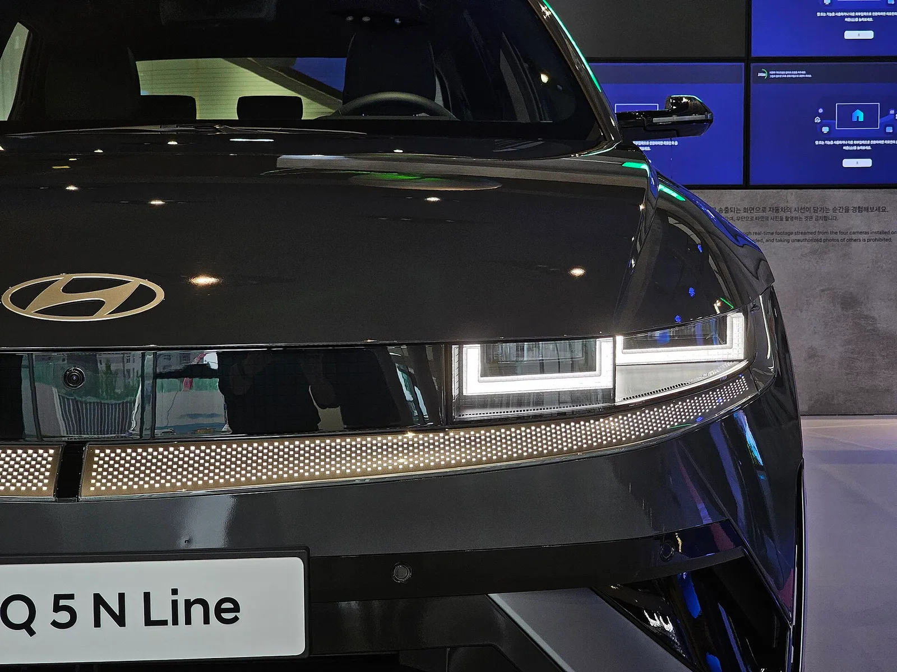
▲ V2L을 일찍 상용화한 현대 아이오닉 5(N Line 전시차). V2L 장치 자체는 사진에 나오지 않는다 ⓒ Damian B Oh / Wikimedia Commons, CC BY-SA 4.0
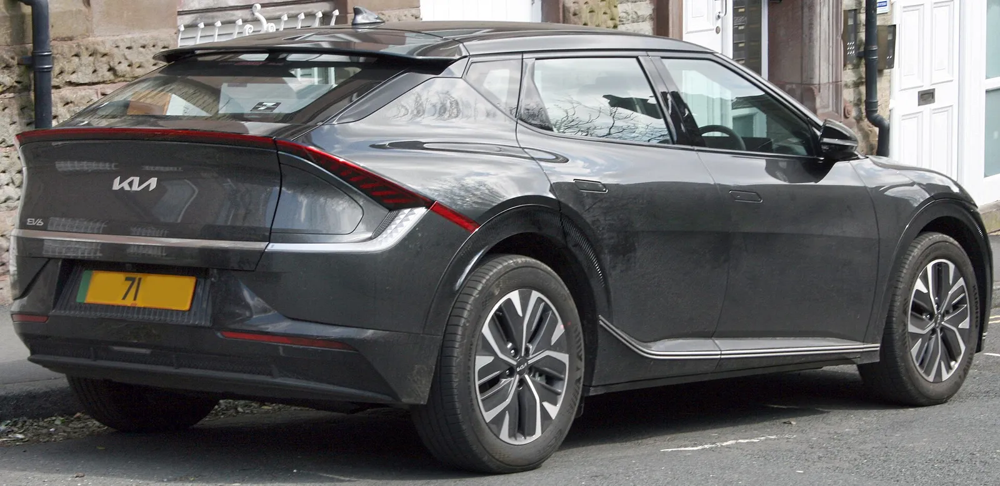
▲ 기아 EV6도 V2L 지원 차종으로 꼽힌다. 사진은 EV6 후면으로 V2L 장치는 보이지 않는다 ⓒ DieselFordMondeo / Wikimedia Commons, CC BY-SA 4.0
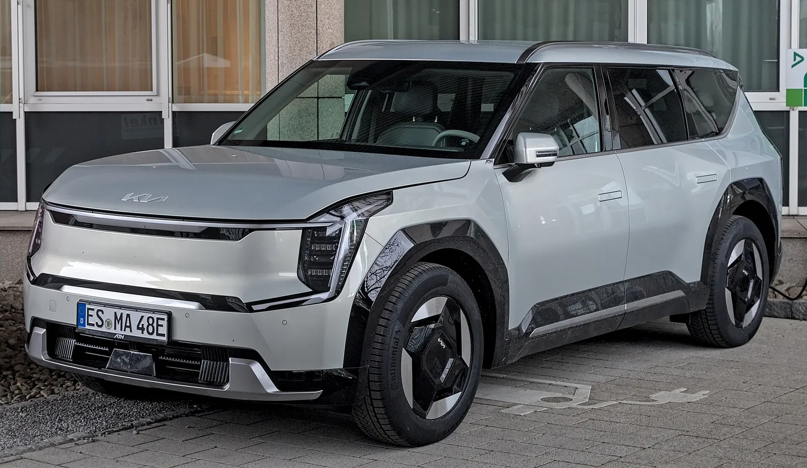
▲ 기아 EV9(전시 차량). V2L 장치는 사진에 나오지 않으며 국내 사양과 같다고 단정하지 않음 ⓒ Alexander-93 / Wikimedia Commons, CC BY-SA 4.0
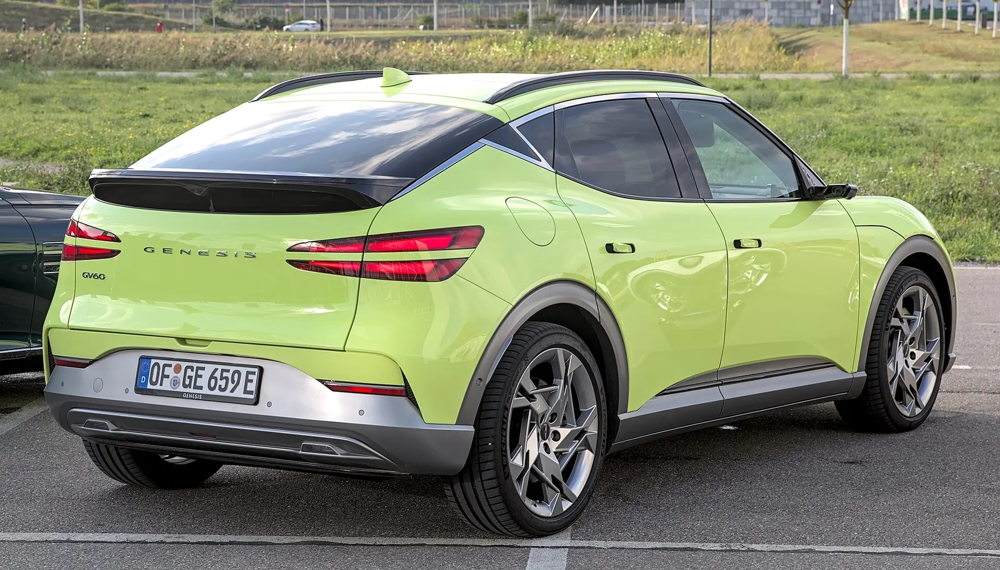
▲ 제네시스 GV60(독일 촬영 차량). 현대차그룹 V2L 지원 차종으로 보도된 모델이다. V2L 장치는 보이지 않으며 국내 사양과 같다고 단정하지 않음 ⓒ Alexander Migl / Wikimedia Commons, CC BY-SA 4.0
4. 해외에서 먼저 나온 V2L — 테슬라의 단계적 확대
한국 발표만 보면 갑작스러워 보이지만 해외 보도를 이어 보면 트림을 넓혀 가며 지역별로 어댑터를 따로 파는 방식이 일관된다. 아래는 확인한 보도만 시간순으로 모은 표다.
| 시점 | 지역 | 내용 | 출처 |
|---|---|---|---|
| 2025년 9월 30일 전후 | 미국 | 모델 Y 퍼포먼스가 사이버트럭 외 첫 V2L 탑재 차종으로 보도 | Not a Tesla App 등(검색 요약) |
| 2026년 6월 2일 | 호주·뉴질랜드 | 모델 Y L용 3.5kW 어댑터 발매(호주 145호주달러) | 차저랩 |
| 2026년 7월 초 | 한국 | 아웃렛 어댑터 14만5000원, 모델 Y L 한정 예약판매 보도 | 한국경제 |
| 2026년 8월 14~15일경(보도일 15일) | 미국 | 모델 Y 프리미엄 전 트림으로 확대, 어댑터 80달러(2.4kW). 1세대 모델 Y는 제외 | 테슬라라티 |
| 2026년 10월 1일 | 한국 | 10월 인도분부터 모델 3·모델 Y 탑재 공지 | 테슬라코리아, 브릿지경제 |
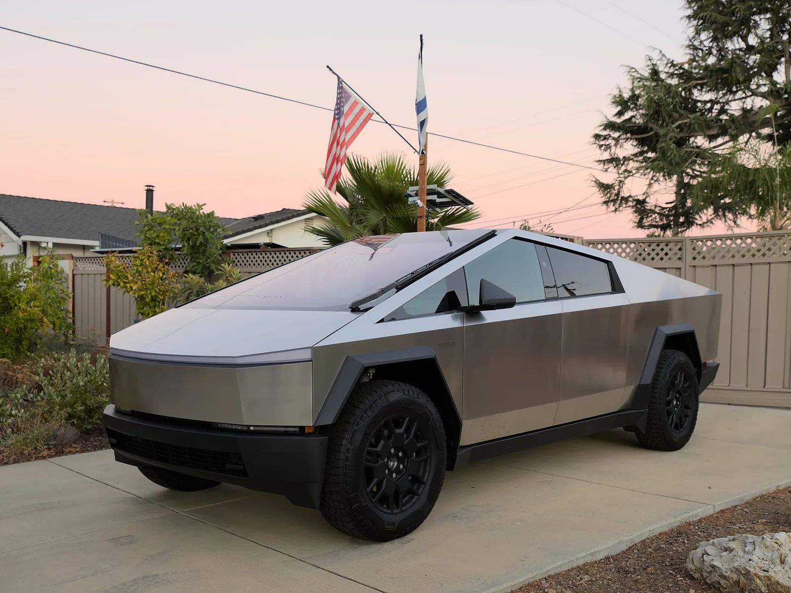
▲ V2L을 가장 먼저 지원한 테슬라 차종 중 하나인 사이버트럭 ⓒ Dllu / Wikimedia Commons, CC BY-SA 4.0
한국형 모델 Y의 어느 세대·트림까지 포함되는지는 확인하지 못했다. 위키트리·테슬라라티는 미국에서 V2L이 신형('주니퍼') 플랫폼 모델 Y 전용이라 1세대 소유주는 쓸 수 없다고 전했지만, 이를 한국 판매 연식에 그대로 대입하지는 않았다.
5. 이미 인도받은 차는? — 후장착은 사실상 어렵다는 분석
아시아투데이는 전기차 유튜버 '차쌈'의 분석을 인용해, V2L을 쓰려면 신형 전력변환시스템(PCS)인 PCS2가 탑재돼야 하고, 부품 가격에 공인 비용까지 더하면 후장착은 가격 경쟁력이 떨어진다고 전했다. 그는 "기존 차를 중고로 팔고 신차를 사는 것과 비용 차이가 크지 않을 수 있다"고 말한 것으로 보도됐다. 호주 매체 지카도 "기존 모델 3는 후장착할 수 없다"고 썼다.
미국 쪽 자료는 이 판단을 일부 뒷받침한다. 노트어테슬라앱은 테슬라가 PCS1을 PCS2 Lite로 바꾸는 정비 절차서를 올렸다고 전했다(2026-08-17). 절차서에는 '초안' 표시가 남아 있지만 테슬라는 검증을 마쳤다고 밝힌 것으로 보도됐다. PCS2 부품값만 약 1,750달러에 배선·냉각수 호스 등이 추가되고, 344단계에 고전압 배터리 분리까지 필요한 서비스센터급 작업이라는 설명이다. 이 매체는 "비용과 복잡성을 보면 고객에게 제공될 가능성이 낮다"고 썼고, 테슬라가 고객용 개조 프로그램을 발표하지는 않았다. 전환 시점은 2026년 6월경이며 5월에 생산된 모델 Y 일부도 V2L이 안 된다고 한다. 한국 판매 차량의 생산 시점·부품 구성은 확인하지 못했으므로 이 시기 구분을 국내 인도분에 대입하지 않았다. 모델 3는 PCS2 Lite 부품이 올해 3월 서비스 문서에 등장했다는 보도(드라이브테슬라캐나다, 2026-03-27)가 있지만, V2L과의 연결은 그 매체의 추정이다.
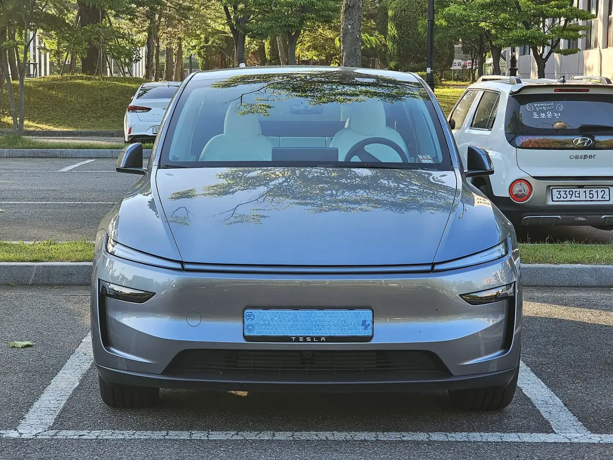
▲ 한국에서 촬영된 것으로 보이는 신형 모델 Y 전면(주차장). 트림·연식·V2L 대상 여부는 사진으로 확정하지 않음 ⓒ Damian B Oh / Wikimedia Commons, CC BY-SA 4.0
| 구매 상황 | 판정 | 근거·한계 |
|---|---|---|
| 10월 이후 인도받는 모델 3·Y | 탑재 대상(어댑터는 별도 구매 보도) | 테슬라코리아 공지. 트림·옵션별 예외는 확인하지 못함 |
| 계약했지만 아직 인도 전 | 인도 시점에 따라 갈림 | 공지가 '인도 기준'이므로 생산 시점·재고 차량 구분을 스토어에 확인해야 함. 카프리즘이 확인한 보도에는 규정이 없음 |
| 이미 인도받은 모델 3·Y | 사실상 어렵다는 전망 | PCS2 필요(차쌈 분석, 아시아투데이). 미국은 PCS2 Lite 교체 절차서가 있으나 고객용 프로그램 미발표(노트어테슬라앱). 한국 공식 입장은 확인하지 못함 |
| 모델 Y L | 기존 지원 대상 | 한국경제 보도(어댑터 예약판매) |
✅ 계약자·인도 대기자 체크포인트
- 내 차량의 인도 예정일이 10월 이후인지, 그리고 그 차량이 V2L 탑재 사양인지 스토어 또는 계약서에서 확인
- 어댑터가 번들인지 별매인지와 모델 3·Y용 가격·입고 시점을 구매 전에 문의(보도는 별도 장비로 전함)
- 모델 Y는 트림·연식별 대응 여부를 확인(미국은 신형 플랫폼 한정)
- 이미 받은 차는 후장착을 서두르지 말고 테슬라의 공식 안내를 기다리기
- 사용 전 설명서의 방전 하한·허용 전류·전열기구 제한 확인(안전수칙은 활용 가이드 참고)
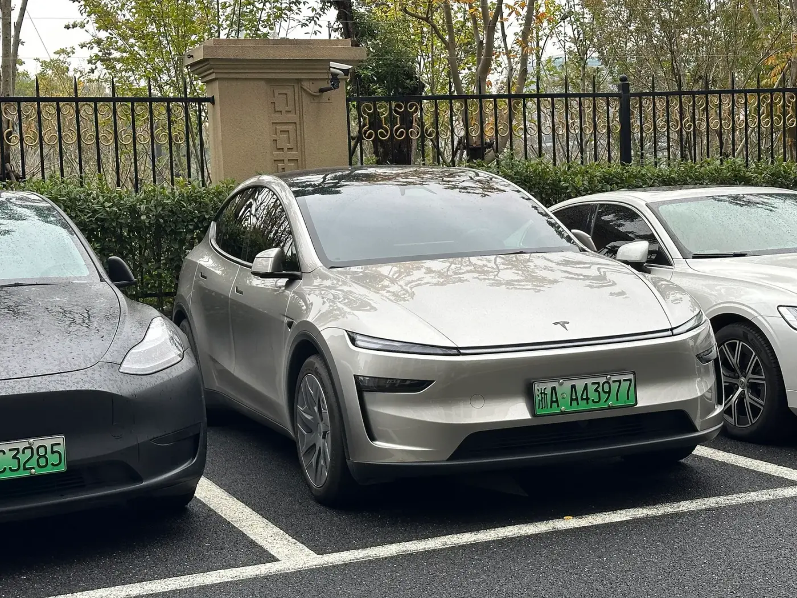
▲ 파일명이 '모델 Y L'로 분류된 차량. 번호판으로 보아 중국에서 촬영한 것으로 보이며 국내 사양은 아님 ⓒ KitsuneDP / Wikimedia Commons, CC0
6. 한국 소비자 관점 — 왜 '당근'이라는 반응이 나왔나
지피코리아는 업계 관계자의 말을 빌려 "차량을 6개월에서 1년째 인도하지 않고 있으면서 결국 당근을 하나 던져 준 느낌이라 씁쓸하다"는 반응을 전했다(원문 확인). 이 문장은 기사에 인용된 익명 업계 관계자의 평가이고, 테슬라가 인도 지연을 달래려고 V2L을 넣었다는 근거는 확인하지 못했다. 카프리즘은 이를 사실이 아닌 시장 분위기로만 소개한다.
소비자 입장에서 따져볼 점은 세 가지다. 첫째, 비용 구조다. 어댑터가 14만5000원 안팎이면 신차 가격에 비해 작은 금액이지만, 번들이 아니면 처음부터 총액에 넣어야 한다. 둘째, 시점이다. 아시아투데이는 차쌈의 말을 빌려 테슬라가 사양 변경을 앞두고 한 달가량 한국 물량을 대량으로 밀어내지 않는 것으로 보인다고 전했는데, 이는 그의 관찰·추정이며 공식 확인은 없다. 셋째, 보조금이다. 같은 유튜버는 V2L이 적용되면 내년부터 전기차 보조금이 일부 늘어날 가능성이 있다고 내다봤지만, 이는 개인 전망이다. 보조금 구조 자체는 보조금 공백기 할인 경쟁 기사에서 다뤘다.
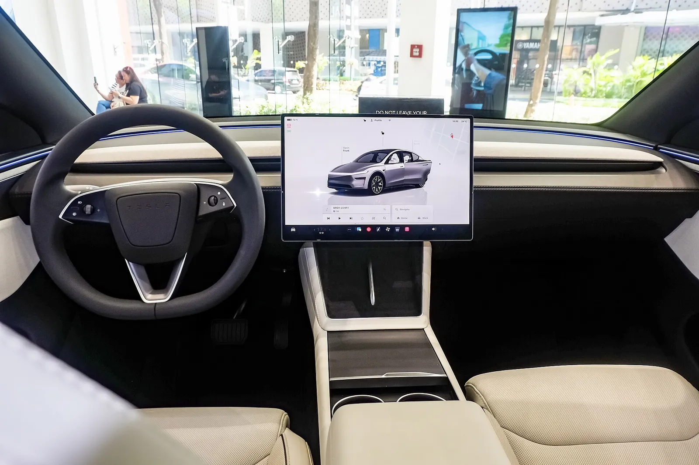
▲ 모델 Y L 실내(미국 사양 전시차). 어댑터는 충전 커넥터에 연결하는 방식으로 보도됨(국내 방식은 확인하지 못함) ⓒ Ethan Llamas / Wikimedia Commons, CC BY-SA 4.0
모델 Y의 가격 변동과 6인승 모델 Y L의 인상 경위는 모델 Y 주니퍼 가격 기사와 모델 Y L 가격 인상 기사에, 중고 가치 비교는 아이오닉 5·모델 Y 감가 비교에 있다. 이 글에서는 차량 가격을 다루지 않았다. 매체·블로그마다 트림 가격이 다르게 나와 교차 확인이 되지 않았기 때문이다.
7. 어댑터로 얼마나 쓰나 — 정전·캠핑 사용 시간 계산
활용 가이드의 계산식을 그대로 가져와 테슬라에 적용했다. 사용 가능 전력량(kWh) = 배터리 용량 × (시작 SOC − 방전 하한 SOC) × 변환 효율이며, 시작 80%·하한 20%·효율 0.85는 활용 가이드의 가정 그대로다. 문제는 용량이다. 테슬라 한국 사이트는 열리지 않았고(403), 배터리 용량을 공식 수치로 확인하지 못했다. 외부 데이터베이스는 모델 Y 프리미엄 RWD 순용량을 79kWh, 모델 3 RWD를 60kWh대로 제시하지만 출처마다 다르고 한국 인도 사양과 같다고 확인되지 않았다. 그래서 60·75·79kWh를 '가정'으로 두고 민감도만 봤다.
| 배터리 용량(가정) | 사용 가능 전력량 | 가정용 하루 3.4kWh 기준 | 계산값의 75%(보수) | 1,500W 한 가지 연속 | 3,520W 상한 연속 |
|---|---|---|---|---|---|
| 60kWh | 30.6kWh | 약 9.0일 | 약 6.8일 | 약 20.4시간 | 약 8.7시간 |
| 75kWh | 38.3kWh | 약 11.3일 | 약 8.5일 | 약 25.5시간 | 약 10.9시간 |
| 79kWh | 40.3kWh | 약 11.9일 | 약 8.9일 | 약 26.9시간 | 약 11.4시간 |
계산 예: 60kWh는 60×0.6×0.85=30.6kWh, 30.6÷3.393(하루 부하 약 3,393Wh)=9.0일, 30,600Wh÷1,500W=20.4시간, 30,600Wh÷3,520W=8.7시간이다. 75%는 가이드가 권한 '계산값의 70~80%' 중간값이다. 용량이 커지면 사용 시간은 같은 비율로 늘지만 순간 출력 한도(3,520W)는 그대로다. 합산 소비전력이 한도를 넘기면 차단된다는 점은 2장의 3.5kW 상한 설명과 같다.
| 항목 | 가정 | 전력량 |
|---|---|---|
| 소형 캠핑 냉장고 | 평균 40W × 24시간 | 960Wh |
| LED 조명 4개 | 10W × 4개 × 5시간 | 200Wh |
| 선풍기 | 40W × 8시간 | 320Wh |
| 노트북·휴대폰 충전 | 가이드와 동일 | 220Wh |
| 합계 | 1,700Wh |
1,700Wh를 배터리에서 꺼내려면 효율 0.85를 반영해 약 2,000Wh가 든다. 용량별 배터리 소모율은 60kWh 약 3.3%p, 75kWh 약 2.7%p, 79kWh 약 2.5%p(1,700÷(용량×0.85)), 2박이면 약 6.7·5.3·5.1%p다. 냉장고 평균 40W와 가동 시간은 카프리즘의 가정이며, 테슬라의 대기 소모와 방전 하한 설정 방식은 확인하지 못했다. 이 계산은 출력 한도와 용량 안에서 되는지만 본 것이고, 전기포트·인덕션 같은 전열기구는 별개로 설명서가 금지할 수 있다. 기아 EV6 설명서가 금지한다는 사실은 위 표에 있고 테슬라 국내 설명서는 확인하지 못했다. 트림 구성은 모델 3 하이랜드 리뷰와 모델 3 퍼포먼스 국내 인증 기사를 함께 보자.
8. 쓰기 전에 — 이 기사에서 다루지 않은 것
V2L 출력으로 어떤 가전을 몇 시간 쓸 수 있는지, 전기포트·전열기구를 연결해도 되는지, 방전 하한은 어떻게 정하는지는 V2L 정전·캠핑 활용 가이드에 계산해 두었다. 특히 제조사 설명서가 전열기구 사용을 금지할 수 있으므로 테슬라 국내 설명서가 공개되면 반드시 그 문구를 먼저 확인해야 한다. 3.5kW라는 숫자는 가전을 마음껏 쓸 수 있다는 약속이 아니다.
| 항목 | 상태 |
|---|---|
| 10월 인도분 모델 3·Y V2L 탑재 | 확인(테슬라코리아 공지, 다수 매체 보도) |
| 어댑터 별도 구매 | 차주 반응·한국경제 보도 기준. 모델 3·Y 판매 페이지는 직접 확인하지 못함 |
| 어댑터 규격 | 220V·16A·60Hz, 최대 3.5kW(브릿지경제 보도) |
| 어댑터 가격(모델 3·Y) | 미확인(모델 Y L 대상 14만5000원 보도만 확인) |
| 대상 트림·연식 | V2L 자체는 미확인. 모델 3 공지의 Zen grey 시트·19인치 휠 선택만 트림 한정 표기 확인 |
| 10월 3일 새 어댑터 가격·번들 | 공식 쇼핑몰 403, 검색에서 새 공지 확인 못함 |
| 테슬라 배터리 공식 용량 | 확인하지 못함(7장은 가정 계산) |
| 기존 차량 후장착 | 어렵다는 전문가 분석, 미국 PCS 교체 절차서(고객용 프로그램 미발표), 한국 공식 답변 미확인 |
| 보조금 영향 | 개인 전망, 정부 기준 미확인 |
9. 요약
테슬라코리아는 2026년 10월 인도분부터 모델 3·모델 Y에 V2L을 탑재한다고 공지했다. 모델 3는 16인치 디스플레이 개선과 블랙 헤드라이너 등도 바뀐다. 실제 사용에는 별도 판매되는 '아웃렛 어댑터'가 필요하다는 보도가 나온다.
국내 어댑터 규격은 220V·16A, 최대 3.5kW(계산상 3,520W)이고 모델 Y L 대상 가격은 14만5000원으로 보도됐다. 현대·기아 순정 커넥터(정가 18만 원대, 부품몰 17만~21만 원)보다 15~31% 싸지만 지원 차종 폭은 현대·기아가 넓다. 모델 3·Y용 가격과 트림 범위는 확인하지 못했다.
이미 받은 차는 PCS2 문제로 후장착이 사실상 어렵다는 전망이 나오지만 테슬라의 공식 입장은 확인되지 않았다. 인도 대기자는 인도 시점과 어댑터 번들 여부부터 스토어에 확인하고, 가전 사용과 안전수칙은 활용 가이드를 따르는 것이 안전하다.